Charlotte Travel Guide
Charlotte, North Carolina, is a vibrant city known for its rich history, diverse culture, and bustling economy. As the largest city in the state, Charlotte offers a mix of modern urban living and Southern charm. Visitors can explore a variety of attractions, including the NASCAR Hall of Fame, the U.S. National Whitewater Center, and the Mint Museum. The city's thriving arts scene is showcased in its numerous galleries and theaters, while its culinary landscape features everything from traditional Southern cuisine to international flavors. Outdoor enthusiasts can enjoy parks and green spaces like Freedom Park and Romare Bearden Park.
Places to See in Charlotte

Des Moines Guy, CC BY-SA 3.0, via Wikimedia Commons; Image Size Adjusted

Bechtler Museum of Modern Art
Four-story museum featuring mid-20th-century modern art with works by major European and American artists, housed in a striking terra-cotta building designed by Mario Botta.

Danksergeant15, CC BY-SA 4.0, via Wikimedia Commons; Image Size Adjusted

Charlotte Museum of History
Museum featuring exhibits and guided tours that explore Charlotte’s Revolutionary-era history, civic ideals, and the preserved 1774 Hezekiah Alexander Rock House.
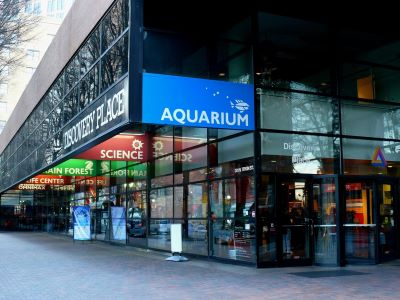
Danksergeant15, CC BY-SA 4.0, via Wikimedia Commons; Image Size Adjusted
Discovery Place Science
Interactive science museum offering hands-on exhibits, immersive environments, and live demonstrations that explore science, technology, and the natural world.
Danksergeant15, CC BY-SA 4.0, via Wikimedia Commons; Image Size Adjusted
Freedom Park
Expansive urban park offering trails, sports courts, playgrounds, and a scenic lake surrounded by lush greenery and connected to the Little Sugar Creek Greenway.
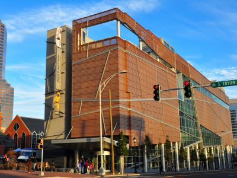
Dsmspence, CC BY-SA 3.0, via Wikimedia Commons; Image Size Adjusted

Harvey B. Gantt Center for African American Arts and Culture
Contemporary cultural institution dedicated to presenting, preserving, and celebrating artistic expression, history, and heritage of people of African descent.
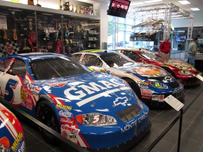
Jeff P from Berkeley, CA, USA, CC BY 2.0, via Wikimedia Commons; Image Size Adjusted
.jpg){kind=link}
Hendrick Motorsports Museum
Free-admission motorsports museum displaying championship-winning race cars, trophies, and archival exhibits that chronicle decades of NASCAR competition and team innovation.
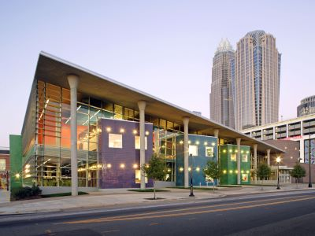
Jeff P from Berkeley, CA, USA, CC BY 2.0, via Wikimedia Commons; Image Size Adjusted
Imaginon: The Joe and Joan Martin Center
Youth-focused cultural and educational center combining a children’s library, teen innovation spaces, and professional theater to promote literacy, creativity, and the performing arts.
Danksergeant15, CC BY-SA 4.0, via Wikimedia Commons; Image Size Adjusted
Latta Place Historic Site
Historic site within a nature preserve featuring restored 19th-century buildings and interpretive exhibits focused on the lives of enslaved people, settlers, and Indigenous communities.
Danksergeant15, CC BY-SA 4.0, via Wikimedia Commons; Image Size Adjusted
Market at 7th Street
Indoor urban market and nonprofit food hall featuring diverse local eateries, artisan vendors, and community events in a vibrant, communal setting.
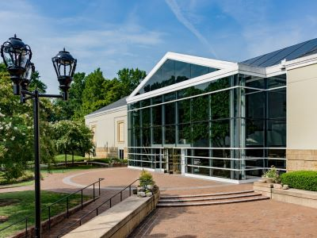
Jeff P from Berkeley, CA, USA, CC BY 2.0, via Wikimedia Commons; Image Size Adjusted
Mint Museum Randolph
Historic art museum housed in a former U.S. Mint building, featuring collections of ancient American, European, African, and decorative arts in a tranquil park setting.
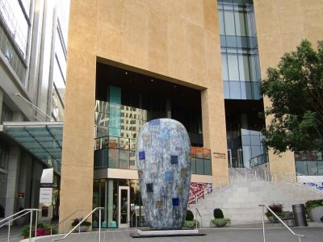
Jeff P from Berkeley, CA, USA, CC BY 2.0, via Wikimedia Commons; Image Size Adjusted
Mint Museum Uptown
Contemporary art museum showcasing international exhibitions, craft and design collections, and immersive cultural experiences across five architecturally striking floors.

Jeff P from Berkeley, CA, USA, CC BY 2.0, via Wikimedia Commons; Image Size Adjusted
NASCAR Hall of Fame
Interactive museum honoring the history and heritage of NASCAR with exhibits, simulators, and tributes to legendary drivers and teams.
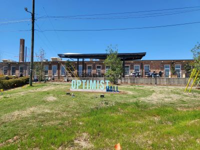
Jeff P from Berkeley, CA, USA, CC BY 2.0, via Wikimedia Commons; Image Size Adjusted
Optimist Hall
Revitalized textile mill transformed into a bustling food hall and retail hub featuring diverse eateries, craft beverages, and local artisan shops in a vibrant communal space.
Danksergeant15, CC BY-SA 4.0, via Wikimedia Commons; Image Size Adjusted
Queen Charlotte Walks in Her Garden
Bronze sculpture depicting Queen Charlotte in a garden setting with her dogs, celebrating her legacy as namesake of the city and her love of botany and the arts.
Danksergeant15, CC BY-SA 4.0, via Wikimedia Commons; Image Size Adjusted
Queen City Quarter
Vibrant mixed-use destination offering dining, shopping, nightlife, and event spaces in a revitalized urban complex in the heart of Uptown.
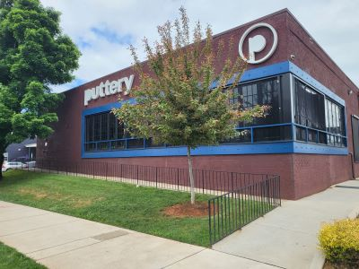
Jeff P from Berkeley, CA, USA, CC BY 2.0, via Wikimedia Commons; Image Size Adjusted
The Puttery
Upscale indoor mini golf venue offering immersive themed courses, craft cocktails, and elevated dining in a vibrant adults-only social setting.
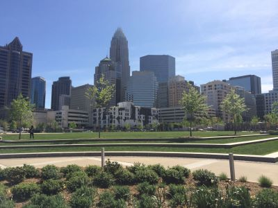
Jeff P from Berkeley, CA, USA, CC BY 2.0, via Wikimedia Commons; Image Size Adjusted
Romare Bearden Park
Urban green space featuring fountains, gardens, sculptures, and open lawns for recreation and events, honoring the legacy of artist Romare Bearden.
Jeff P from Berkeley, CA, USA, CC BY 2.0, via Wikimedia Commons; Image Size Adjusted
Sullenberger Aviation Museum
Interactive aviation museum featuring historic aircraft, immersive exhibits, and the iconic “Miracle on the Hudson” Airbus A320, celebrating innovation and aerospace heritage.
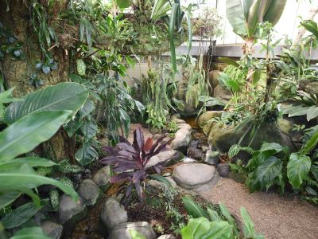
Jeff P from Berkeley, CA, USA, CC BY 2.0, via Wikimedia Commons; Image Size Adjusted
UNC at Charlotte Botanical Gardens
Living plant museum offering themed gardens, native species, and a tropical greenhouse for education, conservation, and quiet reflection.
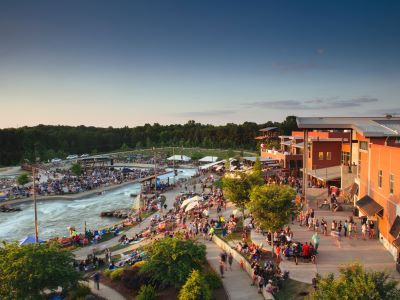
Jeff P from Berkeley, CA, USA, CC BY 2.0, via Wikimedia Commons; Image Size Adjusted
US National Whitewater Center
Expansive outdoor recreation center offering whitewater rafting, ziplining, climbing, mountain biking, and seasonal events across 1,300 acres along the Catawba River.
Overview
Charlotte is the largest city in North Carolina and one of the fastest-growing in the country, known as the "Queen City" and as the second-largest banking center in the United States after New York. It is also the center of NASCAR racing, with the NASCAR Hall of Fame, and a growing hub for professional sports, food, and culture. The city's modern skyline of glass towers is balanced by tree-lined neighborhoods and a growing array of museums and parks.
Visitors come to Charlotte for the NASCAR Hall of Fame, the U.S. National Whitewater Center, and museums such as the Bechtler Museum of Modern Art and the Mint Museum. They also come for professional football, basketball, and soccer games, for the food halls such as Optimist Hall, and for nearby attractions such as Carowinds amusement park and Lake Norman.
History
Charlotte was founded in 1768 and named for Queen Charlotte of Mecklenburg-Strelitz, the wife of King George III of Great Britain, and the surrounding county was named Mecklenburg. In 1799, a boy found a large gold nugget at the Reed farm nearby, which started the first gold rush in the U.S. and led to the establishment of a branch of the U.S. Mint in Charlotte in 1837. The city grew with the arrival of the railroads and cotton textiles, and in the late twentieth century it became a major banking center, with the headquarters of Bank of America and the East Coast operations of Wells Fargo. Charlotte became an NFL city in 1995 and an NBA city in 1988.
Sightseeing and Popular Landmarks
The NASCAR Hall of Fame in uptown has exhibits, race simulators, and a gallery of stock cars, and the U.S. National Whitewater Center is the largest man-made whitewater river in the world, with rafting, kayaking, and zip lines. Romare Bearden Park and the Queen Charlotte statue are uptown landmarks, and Freedom Park is a popular park near Dilworth. Latta Place is a restored 1800s plantation house, and the Hendrick Motorsports Museum shows racing history.
Culture and Museums
The Mint Museum Randolph and Mint Museum Uptown have collections of American and European art and ceramics, and the Bechtler Museum of Modern Art has works by Picasso and Warhol. The Harvey B. Gantt Center celebrates African American art and culture, and Discovery Place Science, ImaginOn, and the Charlotte Museum of History are popular with families. The Sullenberger Aviation Museum is near the airport.
Parks
Charlotte is known as the "City of Trees." Freedom Park, Latta Park, and Romare Bearden Park offer green space, and the Little Sugar Creek Greenway and the Rail Trail are popular for walking and biking. The UNC Charlotte Botanical Gardens has a conservatory and gardens, and the U.S. National Whitewater Center has trails and outdoor sports. Lake Norman and Lake Wylie, near the city, are popular for boating.
Sports
Charlotte has three major league teams. The Carolina Panthers of the NFL and Charlotte FC of Major League Soccer play at Bank of America Stadium, and the Charlotte Hornets of the NBA play at the Spectrum Center. The city is also the heart of NASCAR, with Charlotte Motor Speedway in nearby Concord hosting the Coca-Cola 600 on Memorial Day weekend.
Seasons and Weather
Charlotte has a humid subtropical climate. Summers are hot and humid, with highs in the upper 80s°F and afternoon thunderstorms, and winters are mild, with highs in the 50s°F and a few inches of snow. Spring and fall are the most pleasant seasons, and hurricanes occasionally bring heavy rain.
This article uses material from Wikipedia as well as information from official tourism and institutional sources. Key references include Visit Charlotte, NASCAR Hall of Fame, U.S. National Whitewater Center, Mint Museum, Carolina Panthers, Charlotte Hornets, and National Weather Service Greenville-Spartanburg. Wikipedia material is from the article "Charlotte, North Carolina", and is available under the Creative Commons Attribution-Share-Alike License 3.0.
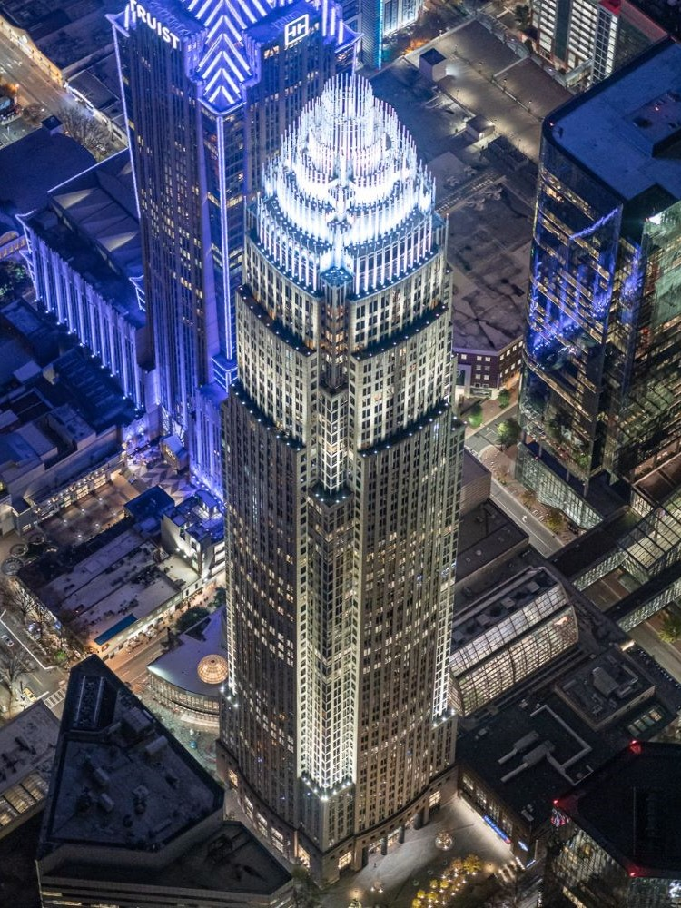
.jpg){kind=link}